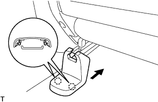
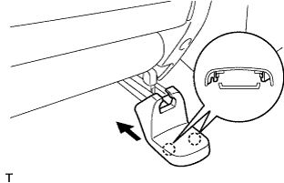

CỤM GHẾ TRƯỚC > LẮP |
| 1. LẮP CỤM GHẾ TRƯỚC |
Hãy để ghế vào trong cabin.
w/ Hệ thống cảnh báo đai an toàn:
Lắp giắc nối phía dưới ghế.
 |
Lắp ghế bằng 4 bu lông.
| 2. KIỂM TRA VÀ ĐIỀU CHỈNH CÁC KHOÁ BỘ ĐIỀU CHỈNH TRƯỢT GHẾ |
Trong khi trượt ghế trước, kiểm tra rằng các bộ điều chỉnh bên trái và bên phải có thể dịch chuyển cùng nhau êm dịu và khoá đồng thời.
Nếu các bộ điều chỉnh ghế không khoá đồng thời, thì nới lỏng các bu lông bắt ghế để điều chỉnh vị trí của bộ điều chỉnh.
| 3. LẮP CỤM TỰA ĐẦU GHẾ TRƯỚC |
| 4. LẮP NẮP CHE GIÁ BẮT RAY TRUỢT GHẾ NGOÀI TRÁI |
|  |
Lắp nắp che giá bắt theo hướng chỉ ra bởi mũi tên trong hình vẽ và cài khớp 2 vấu.
| 5. LẮP NẮP CHE GIÁ BẮT RAY TRUỢT GHẾ TRONG TRÁI |
|  |
Lắp nắp che giá bắt theo hướng chỉ ra bởi mũi tên trong hình vẽ và cài khớp 2 vấu.
| 6. NỐI CÁP VÀO CỰC ÂM ẮC QUY |
| 7. TIẾN HÀNH THIẾT LẬP BAN ĐẦU |
Tiến hành thiết lập ban đầu (Xem trang Kích chuột vào đây).